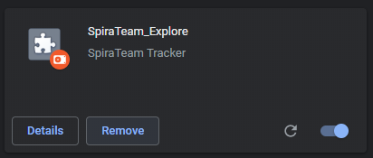
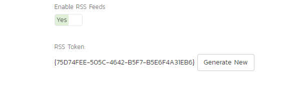

Getting Started
Turning on the application
If the Spira_expolorer icon doesn't appear at the top right of your screen, you will need to proceed to the chrome://extensions page and make sure the bottom right is lit up blue, if not click it to turn on the application.

Starting to record
To start the recording you will need to click on the icon in the top right, which should bring up a popup menu.

As seen above you should now see a Start recording button to record the current tab. Note this will only record the current tab you are in if you would like to record other tabs simply repeat this step Warning you will need to refresh any opened tabs before the extension to record them
Popup once recording
It should be clear that the popup is recording on a individual tab based on the icon this is the recording icon
Take ScreenShot
Take screenshot will capture the current tab you have open. This is here to allow you to manually make sure something is recorded.
Current Step
This displays the current step you recording session is on. Note this will be wrong if you decide to leave the popup open to long as the auto creation of a step will not trigger it to update but this will be fixed by simply clicking off the popup
Step Description
This field is how you break up your testing session when you are viewing the data. Note If you choose to not use this feature the application it will automatically break your session up every 10 minutes for your convience when viewing the data
Create Step
Empties the Step description field and sets a divide in your data to allow you to easily find the data you are looking for when you look back through your session
Note Description
Notes are used to help remind you of what you were thinking during your testing session. They are stored chronologically with your data and are bold to mark there importantance.
Create Note
Empties the note field and stores it in your data you must press this if you want a note stored.
View Data!
View data brings you to a new tab in which all of your data is displayed. Note You will only see this button if you have recorded data if you have no data then you cannot see it till you record data
Viewing Data
Understanding how to view individual pieces of data
On the left of the page there will be a open dropdown of the data you captured, based on the type of data you can do different things with it. For every piece of data you will be able to select the check box on the left, to add it to the data that will sent to Spira(or previewed). Any data contain pictures will allow you to bring them up at a larger size on the right of the page simply by clicking on preview of the image in the table.
Preview data button
The preview data button will bring a popup on to the screen with all the selected data. If you would like to export this data all you have to do is simply highlight the data and copy and paste it to the desired location.
Send Data
This button will bring you to the Sending data to Spira popup.(see Sending data to Spira for more info)
Refresh
Updates the table with any new data Tip Use this button if you have lots of data and just wanna see the new data, if you are already scrolled to the bottom it will keep you there
Clear Data and stop Recording
Closes the current data table page, clears all data in chrome storage, and stops recording all tabs.
Sending data to Spira
Username
Username is simply the username you have in Spira.
Url
The Url is the root address of the application.
API key/RSS Token
Is found by going to your profile page and scrolling down

Note This can be disabled be you or your administrator make sure you have it enabled if you would like to use this feature see warnings section below
Selecting a product
The dropdown will show all projects you currently have access to in Spira.
Select a Incident type
This is based on the template you have selected.
Incident Name
This is the intial name for the incident in Spira. Warning This field is required you will not be able to make a incident without it
Send data to Spira
This creates the incident in Spira.
Warnings
Version
To be able to create incidents in Spira must have version 6.1 or higher
Tabs
Recording multiple tabs
If you are recording data across multiple tabs at once it will all be stored together and the steps from one tab will overwrite the steps from another.
Links that open new tabs
If you control click or a link takes you to a new page and you would like to record, you will need to reselect the record button on that page as well if you would like any data from that page.
Turning off extenstion or reinstalling
If you turn off the extenstion or reinstall you will need to refresh any pages you would like to record.
Requiring custom fields
If you are requiring fields that are not default, aka Custom fields in Spira you will not be able to create incidents from the data table. Please talk to your system administrator.
Enabling API key/RSS token
This should intially be enabled but you can check by going to your profile and scrolling down
If Disabled Please talk to your system administrator
Keystrokes
SpiraCapture will record keystrokes on any native HTML element that you can enter text into. This means form elements, and also elements that have contentEditable set to true
I-frames
SpiraCapture will not interact with I-frames. You must manually take screenshots if you want information from them.
Terminology
Data types
Steps
Steps are the structure of the data table. Steps over time will create themselves to help you organize you data, every 10 minutes there will be a new step with the same name but the number since the last manual step add on to the end.
Clicks
Clicks are recorded with an accompaning screenshot and a description of where you clicked. They are recorded on any page that is being recorded. Note Currently their is no distiction between single and double clicks
KeyStrokes
Keystrokes are a string of the characters typed. This string is cutoff by three things either their was nothing new typed in 3 seconds,the target of the typing changed or the enter key was hit. Enter The enter key is treated special, whenever it is hit the string is stopped and a picture is recorded of the page
Screenshots
ScreenShots are done manually and are the only pictures to do so. These are there for recording a result or can be used to accompany notes.
Notes
Notes are you used to remind yourself after the session when you go back through the data.
Url-Changes
Url-Changes allow you to keep track of what page you are on. Note the url changes will on be recorded if it's a Url change with in a single tab click to different tabs or recording multiple tabs will not cause url changes
Network Errors
Network Errors are recorded in the background and are taken from any tab being recorded not just the current tab.